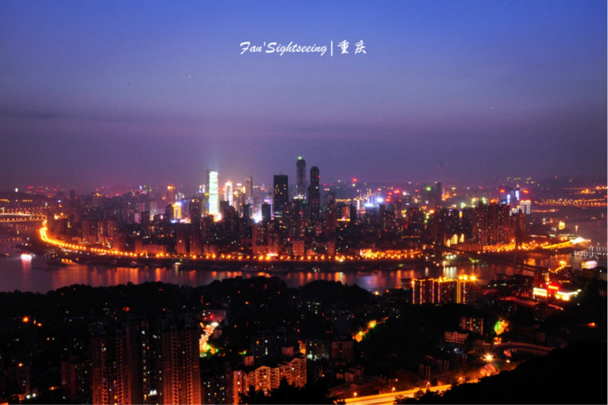
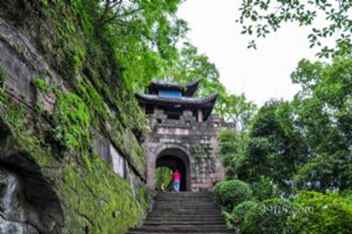
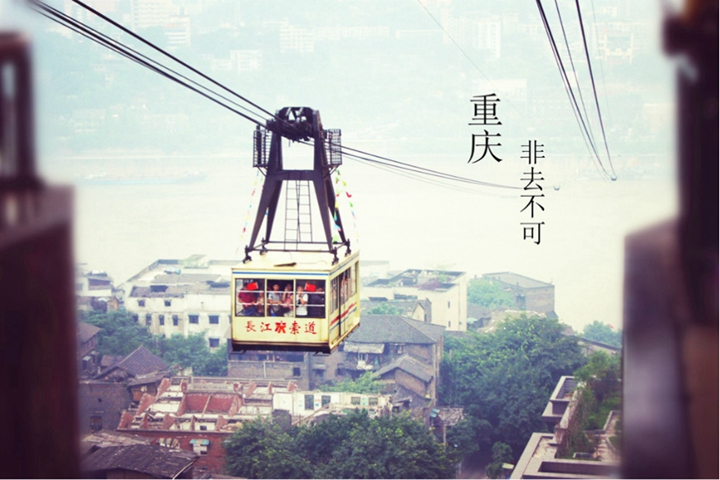
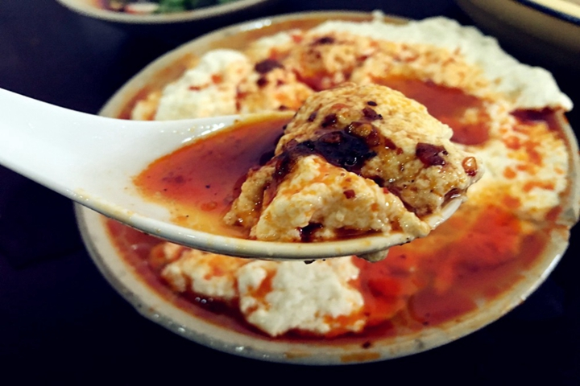
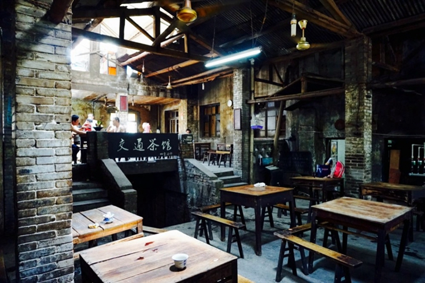
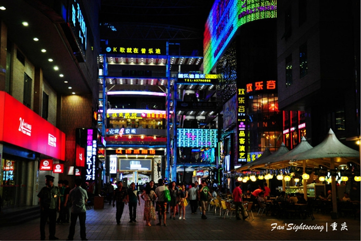
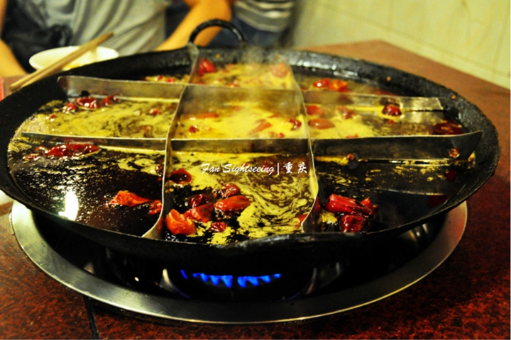

-
千风万景中遇见你 - 首页
- 精选
- 邂逅
-

- 消息

目的地>中国>重庆
Chong Qing


重庆

重庆天气
晴 11℃~22℃
142人来过这里
26篇旅游日志
26篇旅游日志

景点介绍
重庆，它是一座山城，因建立在重重山峦之上，起伏的山势和依山而建的楼房让地图在这里显得用处不大，因为地图是平面的，而重庆则是立体的。重庆也被人叫做“雾都”，需要拨开层层迷雾才能见到它的真身，长江和嘉陵江的交汇处，云天与高楼相接，薄雾弥散，宛如仙境一般。
它还有一个名字叫“火炉”，和这里的人这里的美食一样，火辣辣的直接抵达人心，直来直去从不绕弯子,端的是豪爽二字。 小吃、美女、火锅、通通都是重庆的标签，但都不能单独拿出来代表它，重庆的魅力是需要自己去慢慢探索的。
1.历史的偶然性和必然性在这里得到重合，让它既充满了江湖味又时时被现代化文明充斥着。 每当暮色降临，万家灯火璀璨，流光溢彩，难怪重庆素有“小香港”之称。它的夜景可是公认比上海和香港的还要漂亮。
它依山建筑是“山城”，它云轻雾重是“雾都”，它夏长酷热是“火炉”，风景秀美的城市。重庆小吃挺不错，吃货大爱，美食美景美人。
景点美照






- 2016-2017© 遇见网® yujian.com All rights reserved.Version v1.00
遇见网为旅行爱好者提供记录自己旅途见闻并展示的个人空间。